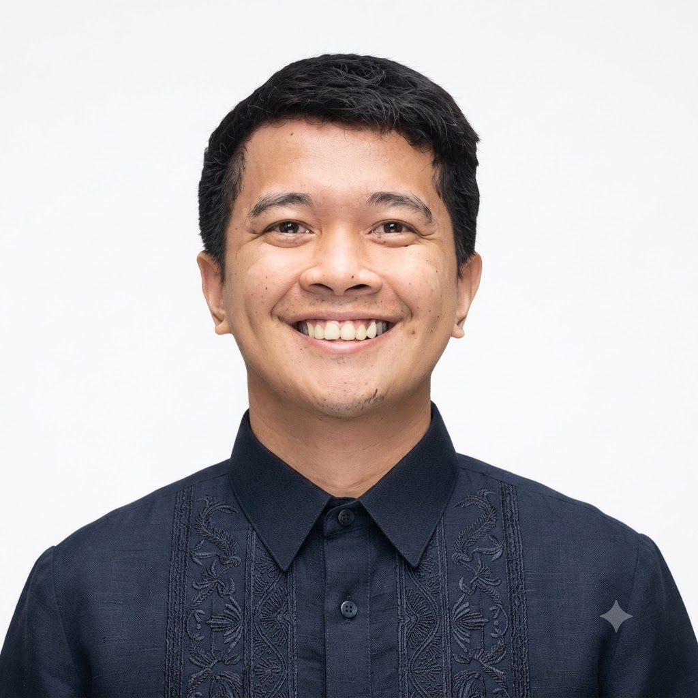

Based in the Philippines · Ready to relocate to Gif-sur-Yvette, France
Communications, digital content and knowledge management professional with 5+ years across the UN system, including WMO, which co-established the IPCC, and UNHCR. Master’s in African Studies with a climate and resilience focus. Applying for the Communication Officer role in the IPCC WGI Technical Support Unit, with two writing samples prepared for it.

Timothy Earl Mateo Castillon
Communications · Digital Content · Knowledge Management
Background
Climate science only changes decisions when people can understand it, trust it and use it. That is the gap I want to work on.
In 2025, while travelling in South America, I walked up to Vinicunca in the Peruvian Andes. What stayed with me was the people working the trail, leading their horses and alpacas past bare rock beneath snow-capped peaks. I photographed and wrote about it for my personal project and came home with questions I could not answer: what the science says about the retreat of the ice, and what it means for the families who live there. I went to the IPCC Sixth Assessment Report for answers, and that became the basis for the two writing samples below.
My background is in design, digital strategy, workflow engineering and event execution, at WMO (which co-established the IPCC), UNHCR and the Local Government Academy. I am eager to add media engagement alongside the TSU and the IPCC Communications Action Team, and ready to start with what I already do well: turning complex material into clear visuals, short texts and sessions people can follow.
Fit for the Role
How my experience lines up with the main areas of the WGI TSU posting, including where I have gaps.
Sample Work
Two pieces written for this role, based on a published WGI finding. Click the box to open both.
For general readers and web audiences. Opens at the Vinicunca trail, explains the melt using IPCC terms, and separates Working Group I (physical science) from Working Group II (impacts). Sources cited.
For journalists and news desks. A short wire-style release with notes to editors. The spokesperson quote is a placeholder.
Career
Communications, digital platforms, events and knowledge management.
Research
Climate and resilience research from my master’s.
Academic Background
Communication
Let's Connect
Ready to relocate to France and to travel internationally. Contact details for two referees are included with my application.